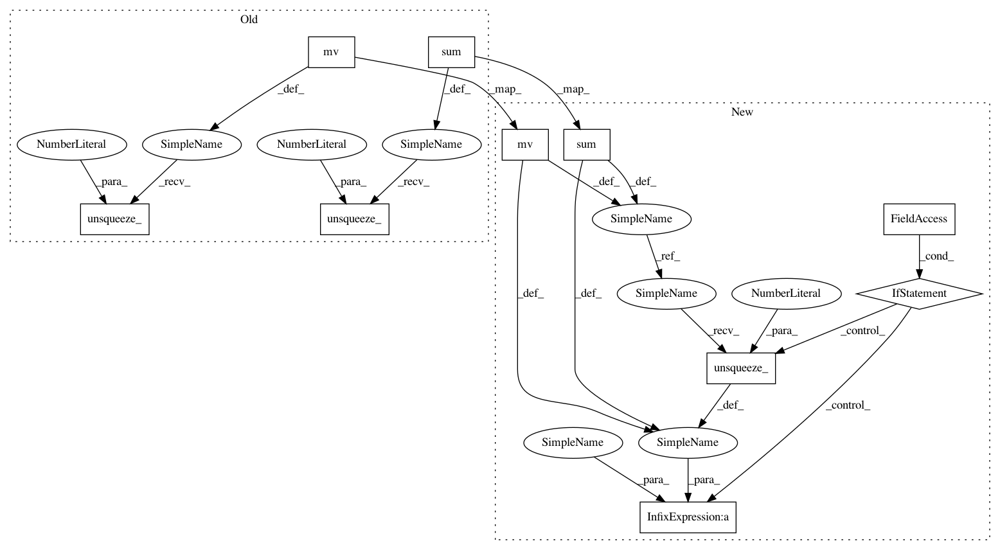

7da71b22f18f5d02ca57a8e5cb5ae47338ae8a31,qucumber/rbm/purification_rbm.py,PurificationRBM,gamma_plus,#PurificationRBM#,344
Before Change
temp += F.softplus(F.linear(v, self.weights_W, self.hidden_bias)).sum()
temp += F.softplus(F.linear(vp, self.weights_W, self.hidden_bias)).sum()
else:
temp = torch.mv(v, self.visible_bias).unsqueeze_(1) + torch.mv(
vp, self.visible_bias
).unsqueeze_(0)
temp += (
F.softplus(F.linear(v, self.weights_W, self.hidden_bias))
.sum(1)
.unsqueeze_(1)
)
temp += (
F.softplus(F.linear(vp, self.weights_W, self.hidden_bias))
.sum(1)
.unsqueeze_(0)
)
return 0.5 * temp
def gamma_minus(self, v, vp):
After Change
F.softplus(F.linear(v, self.weights_W, self.hidden_bias)).sum(1)
)
temp2 = torch.mv(vp, self.visible_bias) + (
F.softplus(F.linear(vp, self.weights_W, self.hidden_bias)).sum(1)
)
if expand:
temp = temp1.unsqueeze_(1) + temp2.unsqueeze_(0)
else:
temp = temp1 + temp2
return 0.5 * temp
def gamma_minus(self, v, vp, expand=True):
rCalculates an element of the :math:`\Gamma^{(-)}` matrix.
In pattern: SUPERPATTERN
Frequency: 4
Non-data size: 10
Instances
Project Name: PIQuIL/QuCumber
Commit Name: 7da71b22f18f5d02ca57a8e5cb5ae47338ae8a31
Time: 2019-12-19
Author: emerali@users.noreply.github.com
File Name: qucumber/rbm/purification_rbm.py
Class Name: PurificationRBM
Method Name: gamma_plus
Project Name: PIQuIL/QuCumber
Commit Name: 7da71b22f18f5d02ca57a8e5cb5ae47338ae8a31
Time: 2019-12-19
Author: emerali@users.noreply.github.com
File Name: qucumber/rbm/purification_rbm.py
Class Name: PurificationRBM
Method Name: gamma_minus
Project Name: PIQuIL/QuCumber
Commit Name: 7da71b22f18f5d02ca57a8e5cb5ae47338ae8a31
Time: 2019-12-19
Author: emerali@users.noreply.github.com
File Name: qucumber/rbm/purification_rbm.py
Class Name: PurificationRBM
Method Name: gamma_plus